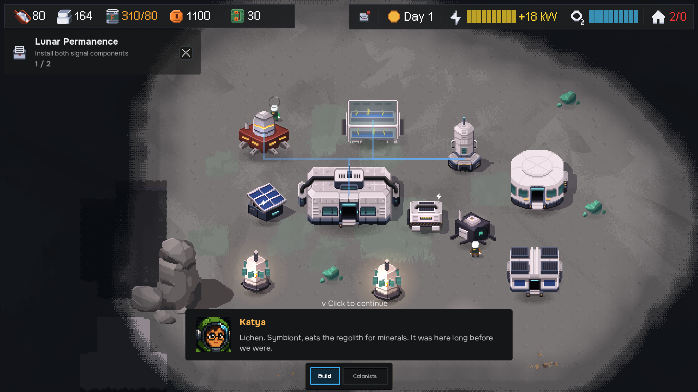
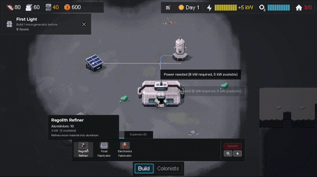
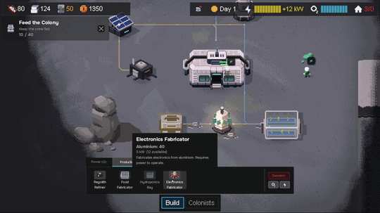

This week I’ve been making survival a little less automatic.



Food & Logistics
The early food loop has had a pretty big overhaul:
- Food Fabricator is now an emergency solution — lower output, higher mineral cost.
- Hydroponics Bay provides sustainable food, but requires Cryo Shards from a hazardous crater biome.
- Food can spoil when you exceed your cold-storage capacity.
- Cold Store gives you more capacity and lets you prepare for difficult periods.
So the early game now becomes a choice between buying time and building a proper supply chain.
Smoother Opening
A few changes should make the first minutes less frustrating:
- Contacting Earth now works with a free hail from the Comms Center.
- Initial lander rations give the crew some breathing room.
- Workers are better at recovering when construction sites are unreachable.
- HUD/tooltips make storage and spoilage easier to understand.
More Personality
I’ve also continued the pixel-art UI pass across the pause menu, save/load screens, quests, building panels and colonist priorities.
Colonists now have expressive portraits, and the HUD has a much stronger visual identity.
Still in progress: storms, crises, day/night visuals, biome zones, and the consequences of losing colonists.
The goal: survival should never be automatic — but every problem should have a readable, satisfying solution.